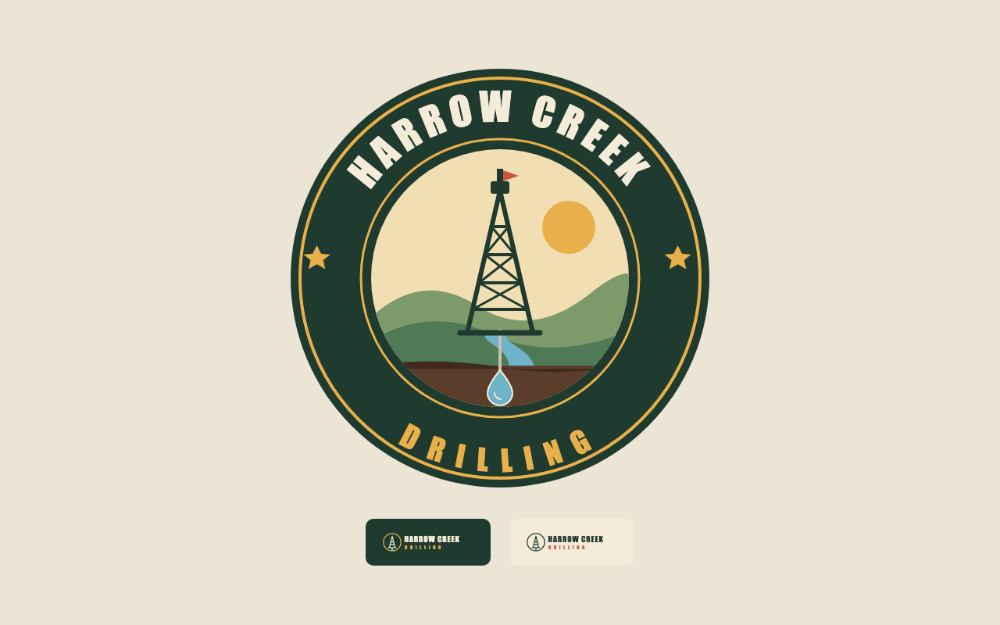
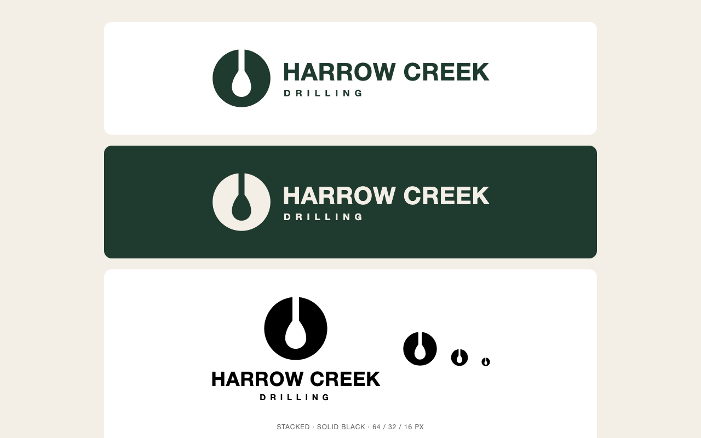

Color, fonts, text setting and marks, so a page or logo looks made for its product.
brand-identity, color-palette, generated-ui-restyle, typeface-selection, typesetting


Example: brand-identity, held-out task brand-h01, sample 1. Stored screenshots, top of the page. Chosen as the task with the largest judged difference in the skill's favor, so it is a favorable example. Judged difference +1.17 on the 5-point rubric; over its loaded tasks the skill won 6, lost 3 and tied 1.